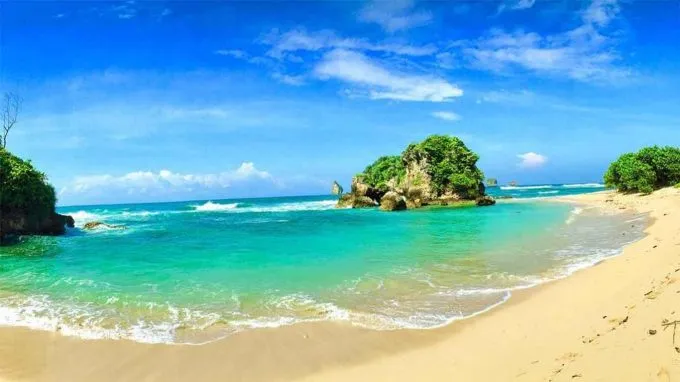

Pantai Watu Leter adalah salah satu pantai yang berada di Kabupaten Malang, Jawa Timur. Pantai ini terkenal dengan suasananya yang tenang, air laut yang jernih, serta pemandangan alam yang masih asri. Nama Watu Leter berasal dari batu karang besar yang bentuknya terlihat datar atau “leter” dalam bahasa Jawa. Pantai ini dikelilingi oleh tebing dan pepohonan hijau yang membuat suasananya terasa alami dan sejuk. Pasirnya yang lembut serta ombak yang relatif tenang di beberapa bagian membuat pantai ini cocok untuk menikmati pemandangan, bermain di sekitar pantai, atau bersantai bersama keluarga dan teman. Selain keindahan alamnya, Pantai Watu Leter juga dikenal sebagai salah satu kawasan yang menjadi habitat penyu. Pada waktu tertentu, penyu dapat datang ke kawasan pantai untuk bertelur. Karena itu, pengunjung perlu menjaga kebersihan dan tidak merusak lingkungan agar keindahan serta ekosistem Pantai Watu Leter tetap terjaga.
3 hal positif dari pantai watu leter| Jenis Layanan / Kegiatan | Kategori | Perkiraan Tarif / Harga |
|---|---|---|
| Tiket Masuk | semua orang | Rp10.000 – Rp15.000 | bayar parkir mobil | Umum / Per Hari | • Rp15.000 – Rp20.000 | bayar parkir motor | Umum / Per Hari | Rp5.000 – Rp10.000 | Biaya Camping | per orang | Rp3.000 – Rp5.000 |